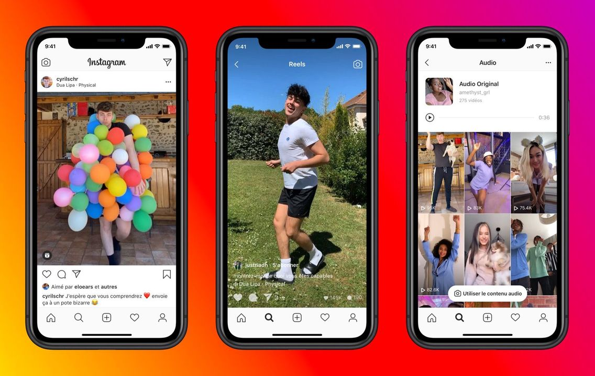

Hi there, welcome on Discover Social Medias! In order to use social medias well for your private or professional using, I briefly explain you 5 concepts of the most common plateforms. First, you need to be more than 13 and have an internet connection and a recent mobile.
Facebook
Facebook, by Mark Zuckerberg, 2004. Facebook is certainly the oldest of the actual social medias. Originally designed for college students when Mark was studying at Harvard University, it’s now a social networking site that makes it easy for you to connect and share with your family and friends online. It allows you to send messages and post status updates to keep you in touch with your friends and family. You can also share different types of content, like photos and links. It’s currently the world’s largest social network, with more than 1 billion users worldwide.
Here is a tutorial to help you subscribing a discover the main parts of Facebook. Enjoy!
Instagram
Instagram, by Kevin Systrom and Michel Mike Krieger, 2010. Instagram is maybe the most used social network by young people. To give you an idea, more than 71% of the active users are less than 35 years old. As Facebook was created, Instagram appeared when Kevin Systrom was studying at Stanford University, while he was directing a photo club. Then, more and more tools like “hyperlapse” to realise time-lapses or “layout” to do photo collage has been added. Nowadays, it allows you to share photos and videos with your personal network or the entire world and to comment or “like” posts that you like. The reason which explain Instagram’s popularity is its simplicity.

Snapchat
Snapchat, by Evan Spiegel and Bobby Murphy, 2011. It appeared one year after Instagram at the same place, Stanford University. It allows to send messages, photos or videos with a selectable self-destruction countdown timer. It is also the origin of the “stories”, which are photos or videos that can be seen by all your friends but that disappears 24 hours after their publication. More than 150 million people are registered on Snapchat and the ¾ of the users are less than 25 years old.
Here is a little presentation.
Twitter
Twitter, by Jack Dorsey, Evan Williams, Biz Stones, Noah Glass, 2006. Twitter is famous for its “tweets” that are very short messages, and it is commonly used by politicians and compagnies to express their ideas, updates or official information. Now, it assembles more than 500 million users around the world. Warning not to speak too much, you would be “ban” as Trump has been recently…
Here is a recap.
Linkedin
LinkedIn, by Reid Hoffman and Allen Blue, 2002. LinkedIn is the biggest professional social network of the world. It is intended for business, compagnies, people who are looking for a job and recruiters. Users’ profile is their CV and all their “followers” they can have on the other social medias like Instagram are people they know on LinkedIn. It’s a platform reserved for professional and commercial relationships. It has registered more than 660 million users.